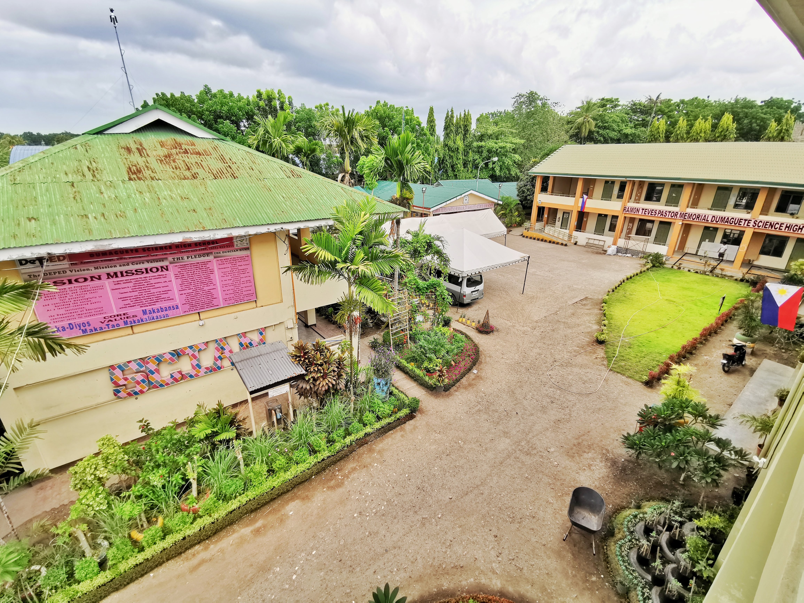
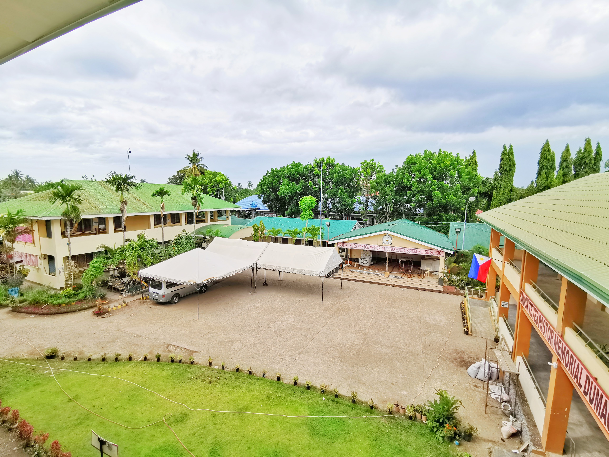
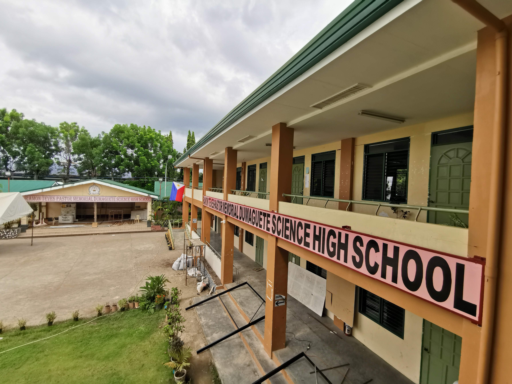
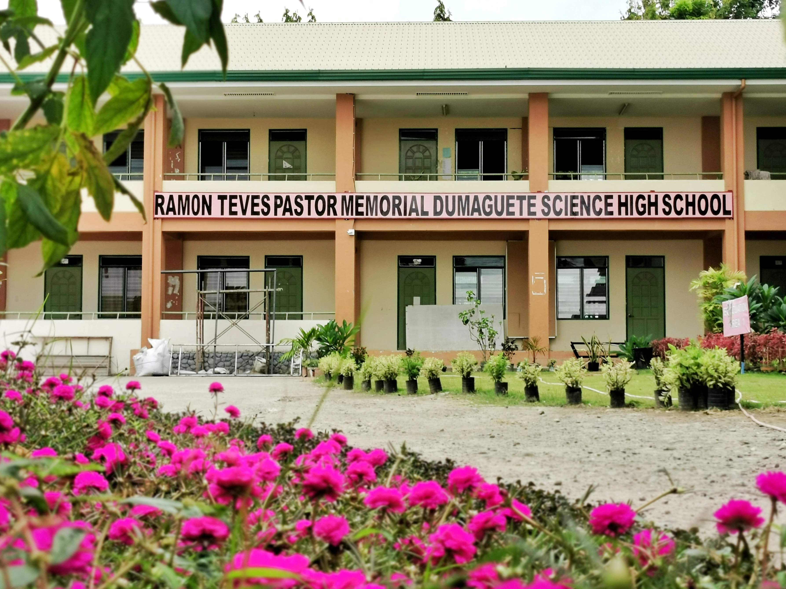
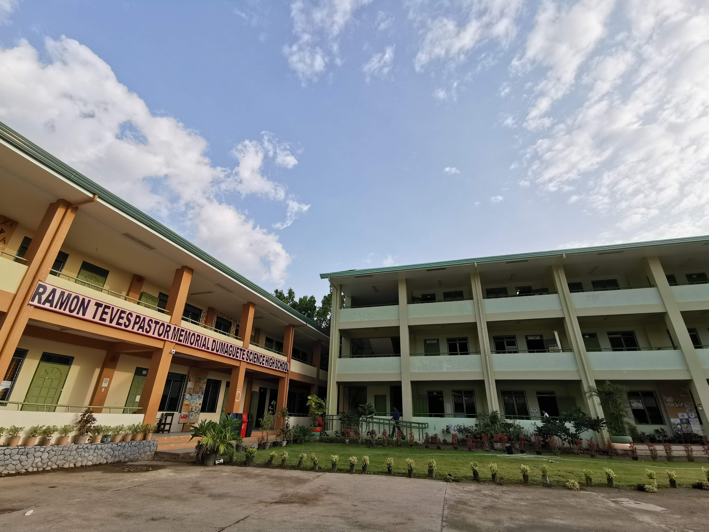
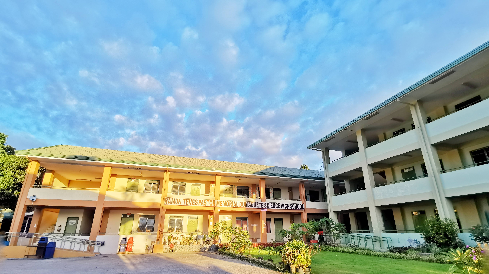

Welcome to our RTPM-DSHS website! Discover the story, achievements, and spirit of our school. Explore our programs, history, and community.
Learn MoreFounded in 1988 in Dumaguete City to provide advanced science education. The school moved to its permanent campus in 1991, after land was donated by the family of Ramon Teves Pastor. Today, RTPM-DSHS is part of the Regional Science High School system.
RTPM-DSHS was established in 1988 to provide advanced science and mathematics education. Today, it serves students across Negros Oriental and Central Visayas, offering a strong STEM foundation.
To be a center of excellence in science and mathematics, shaping learners who are creative, responsible, and ready to make a difference.
To spark curiosity with challenging STEM programs, grow integrity and personal skills, and build strong connections with families and communities.
Follows the K–12 curriculum with enrichment in science, mathematics, research, and technology. Students must maintain high grades to remain in the program.
Offers the STEM strand with advanced courses for students pursuing STEM-related college programs or careers.






Students join academic competitions such as math and science quizzes, research presentations, and STEM challenges.
Students participate in speech choirs, poster-making, and creative arts events. RTPM‑DSHS placed 2nd Runner‑Up in the 2024 Speech Choir Competition at a Dumaguete City literary festival.
An annual cultural celebration featuring street dance and showdown events.
RTPM‑DSHS has been honored in DepEd Region VII Pasidungog Awards, including Most Outstanding Secondary School (Large Category) in 2023.
Ramon Teves Pastor Memorial‑Dumaguete Science High School, Maria Asuncion Village, Barangay Daro, Dumaguete City
rtpmdshs@deped.gov.ph
(035) 523‑4154
Project Manager
Head Developer
Front-End Engineer
Back-End Engineer
Assistant Developer
Researcher
Researcher
Researcher
Member
Member